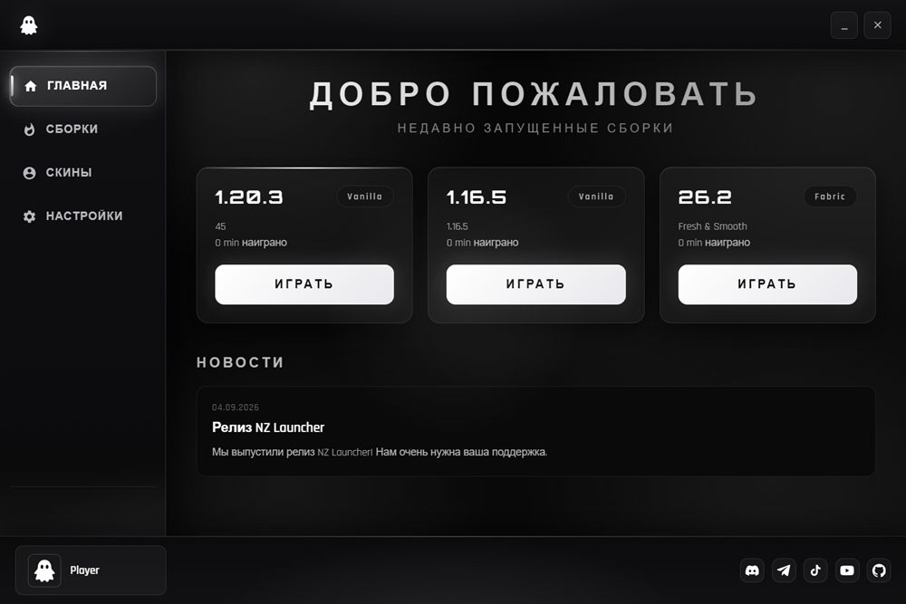
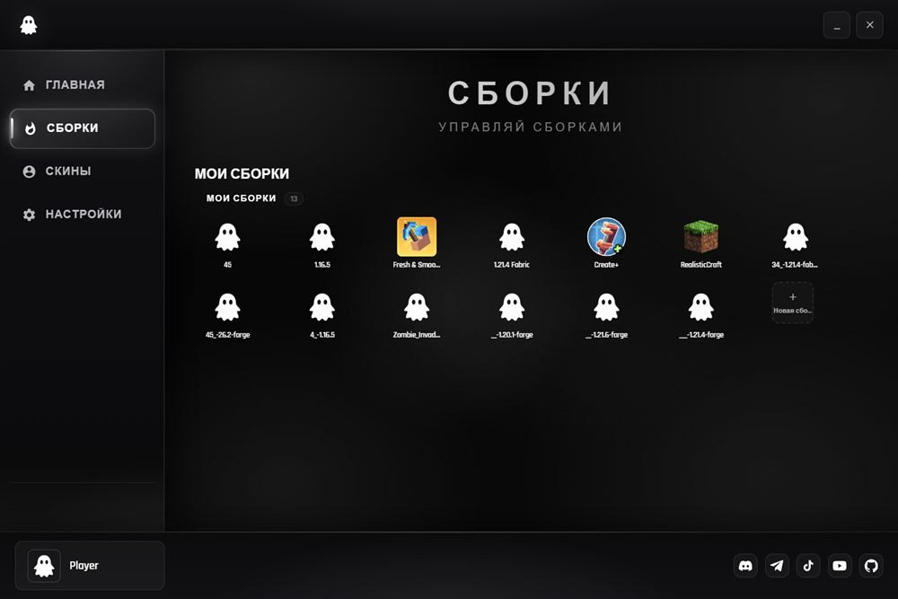
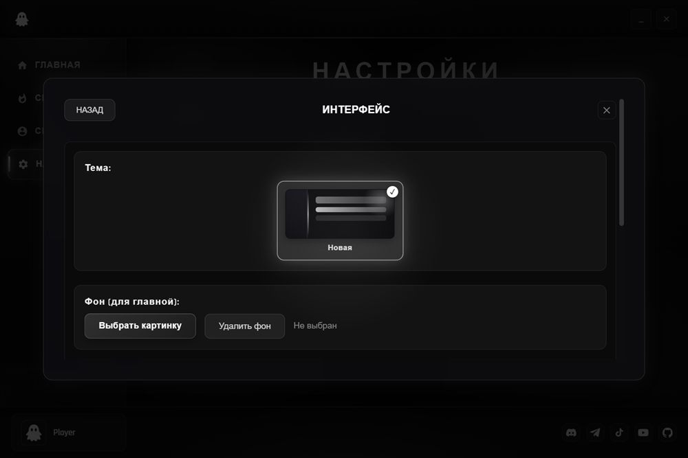

NZ Launcher — бесплатный лаунчер для Windows. Создавай сборки, ставь модпаки из Modrinth и CurseForge, настраивай оформление. Java подберётся сама.
СКАЧАТЬ ДЛЯ WINDOWS
Создавай сборки на Vanilla, Forge, Fabric, NeoForge и Quilt. Устанавливай готовые модпаки из Modrinth и CurseForge в пару кликов.
Под каждую версию игры подбирается и ставится нужная Java автоматически. Ничего искать и настраивать не надо.
Раскладывай сборки по категориям простым перетаскиванием. Порядок сборок сохраняется.
Новые версии лаунчера прилетают сами — кнопка обновления находится прямо в шапке.
Папку с игрой, модами и мирами можно перенести в любое место диска из настроек лаунчера.
Поставь на фон картинку, GIF или даже видео. Интерфейс можно настроить под себя.
Быстрое скачивание сборок Modrinth и CurseForge, обновление модов в один клик, смена версии Minecraft прямо в сборке, оптимизация памяти и плавности интерфейса.

Список сборок с иконками и версиями, разбивка по категориям. Сборки перетаскиваются между категориями, кнопка «Играть» запускает игру в один клик.

Темы оформления, свой фон для главного экрана — картинка, GIF или видео. Настройки применяются сразу, без перезапуска.
Загрузи установщик для Windows и запусти его. Установка занимает минуту.
Выбери версию игры и загрузчик — или установи готовый модпак из каталога.
Нажми «Играть». Игра, моды и Java скачаются сами при первом запуске.
Да, лаунчер полностью бесплатный — и скачивание, и использование, и обновления.
Сейчас — Windows 10 и 11 (64-bit). Установщик один, ничего дополнительно ставить не нужно.
Нет. Под каждую версию игры лаунчер сам подбирает и ставит подходящую Java при первом запуске.
Из открытых каталогов Modrinth и CurseForge — установка прямо из лаунчера, файлы проверяются по хешам.